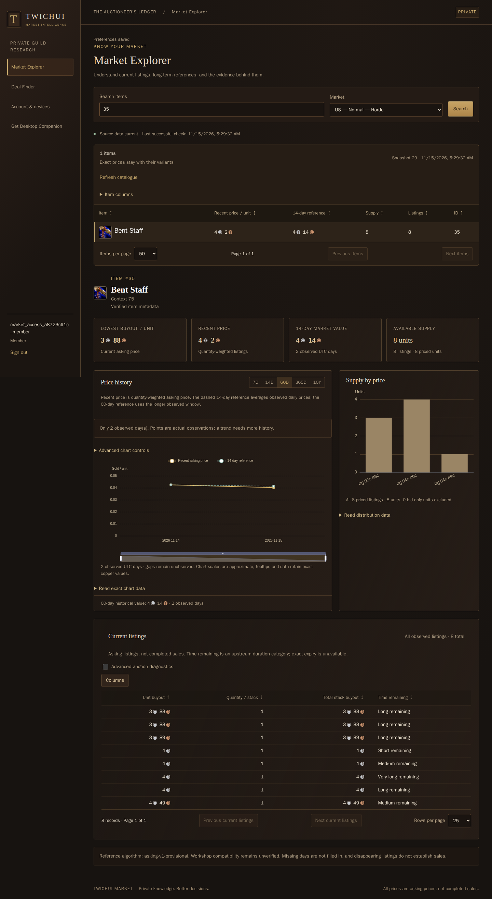
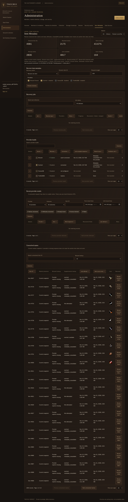
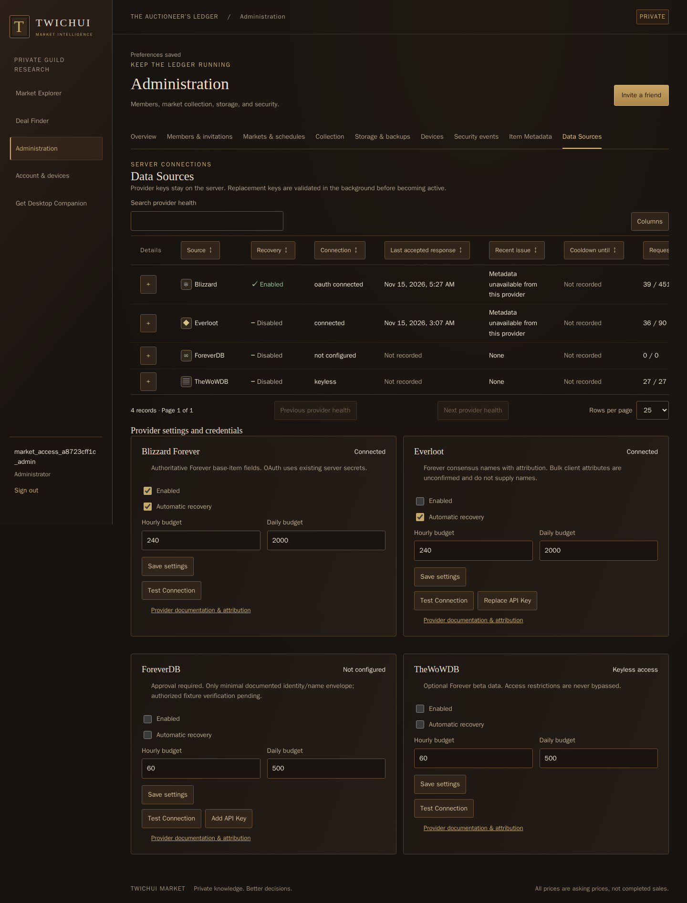
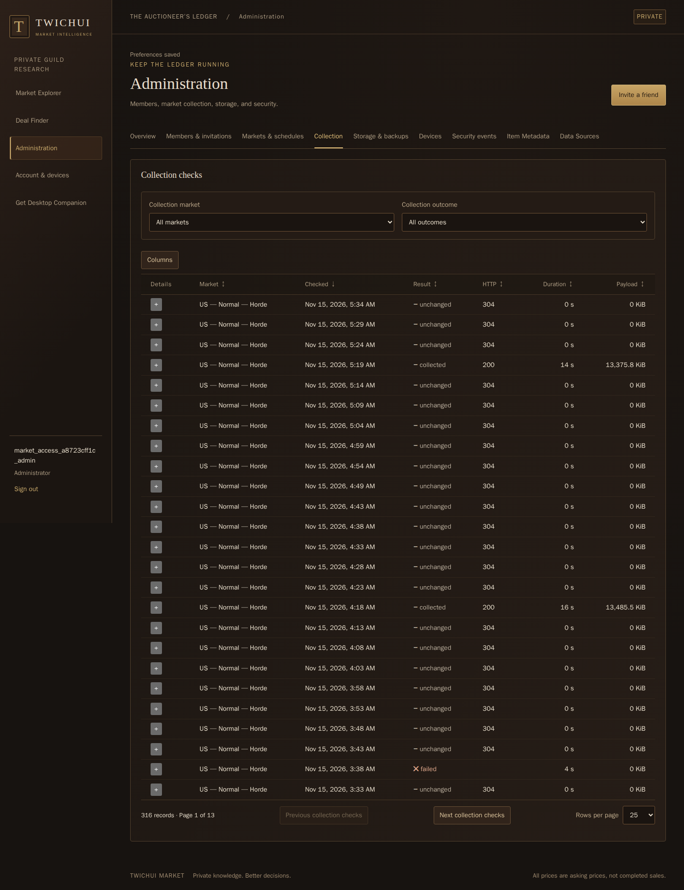
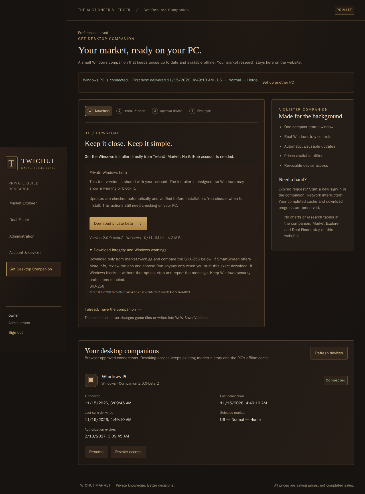

Actual authenticated production captures, November 15, 2026; market asking observations, not completed sales. Temporary audited verification accounts were disabled afterward. This gallery records Phase 1 only.




